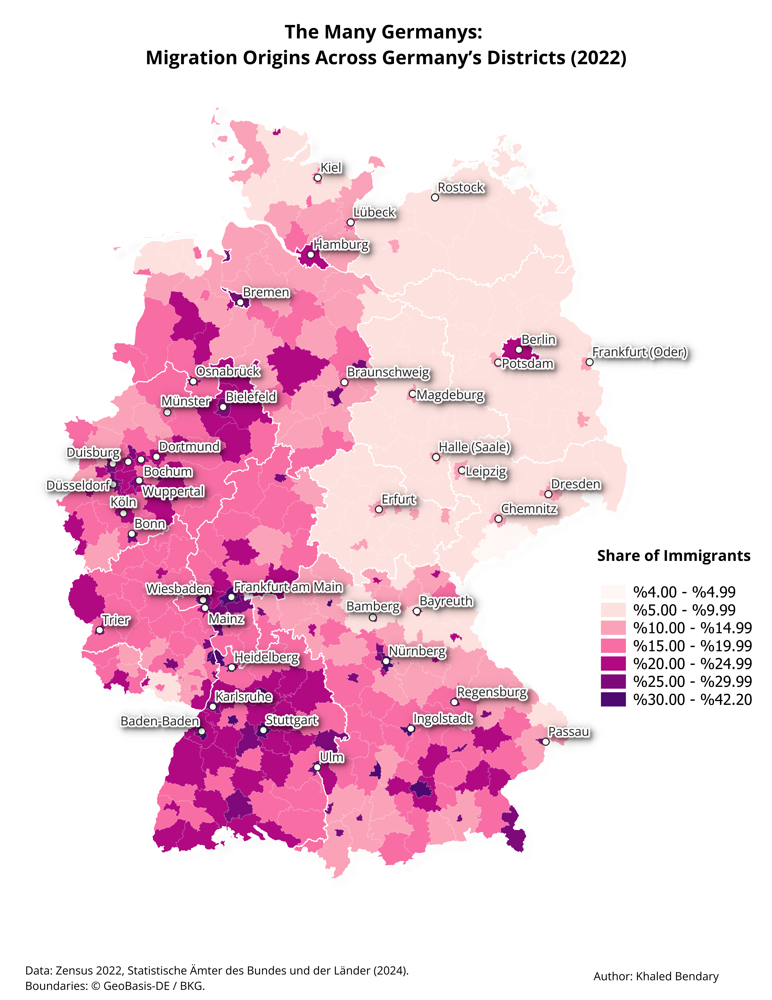

Double Master's of Sciences, Development Economics
Georg-August-Universität Göttingen
Georg-August-Universität Göttingen
2022 – 2023
I am a development economist studying how public policies and migration opportunities reshape household decisions and human capital accumulation in developing countries. Specifically, how changes in economic opportunities alter intra-household bargaining power and the allocation of resources, particularly time, education, and work. In many contexts, the intergenerational transmission of gender norms are pronounced; accordingly, women’s empowerment in norm-intensive settings and migration are natural extensions of these research interests.
Separately, I enjoy reading history and making maps, which informs my second line of research interests on how historical economic shocks affect the educational and occupational sorting of female descendants of migrant families relative to natives. I construct geospatial measures of exposure to historical shocks and exploit natural experiments and quasi-random variation to identify their causal effects, testing whether intergenerational norm transmission and cultural differences account for observed differences in sorting.
Do cash transfers to women empower them, or provoke a backlash among men? I study Egypt’s Takaful program, which directs benefits primarily to women, to examine whether transfers shift men’s attitudes toward intimate partner violence. Eligibility is determined by a proxy means test whose formula the government disclosed in archived online materials but which is not observed in household survey data. I recover the formula and use a random forest to reconstruct eligibility scores in survey data, enabling a fuzzy regression discontinuity design at the eligibility threshold. After approximately eight years of exposure, the results suggest that men become more accepting of domestic violence, measured using the DHS five-scenario index of its justifiability. This pattern is consistent with a male-status-threat mechanism in which improvements in women’s outside options challenge established gender roles and provoke a normative backlash. Although the outcome captures attitudes rather than actual violence, the findings highlight a potential unintended consequence of gender-targeted transfers: improvements in women’s economic position may not translate into more egalitarian gender norms.

Share of immigrants by district, from the 2022 Census. Immigrant shares are highest in the large western and southern cities and across Baden-Württemberg and southern Bavaria, and mostly below 10% in the former East outside Berlin. Data: Zensus 2022, Statistische Ämter des Bundes und der Länder; boundaries © GeoBasis-DE / BKG.
![[Map 1 title]](maps/map1.gif)
A heat map of reported robberies in Philadelphia from 2006 to 2020, showing yellow-to-red density over a street-light-pole outline of the city. The hotspots are narrow and elongated, highlighting robberies clustering just outside the city’s train stations. The incident data is the Philadelphia Police Department’s crime incidents dataset, published by the City of Philadelphia on OpenDataPhilly.
![[Map 2 title]](maps/map2.gif)
A heat map of reported burglaries in Philadelphia from 2006 to 2020, showing yellow-to-red density over a street-light-pole outline of the city. The pattern is spread across most residential areas with few sharp peaks, because burglary happens wherever there is a building to enter, and it resembles the pattern for vandalism. The incident data is the Philadelphia Police Department’s crime incidents dataset, published by the City of Philadelphia on OpenDataPhilly.
![[Map 3 title]](maps/map3.gif)
A heat map of reported aggravated assaults in Philadelphia from 2006 to 2020, showing yellow-to-red density over a street-light-pole outline of the city, with several large hotspots across the city that follow the same areas as homicide and rape. The incident data is the Philadelphia Police Department’s crime incidents dataset, published by the City of Philadelphia on OpenDataPhilly.